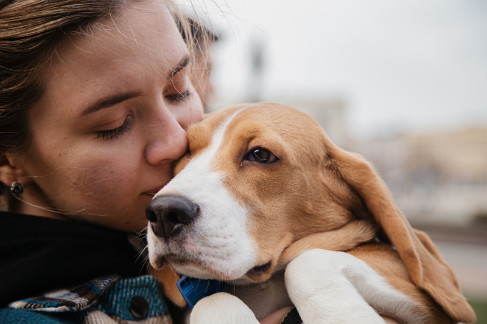
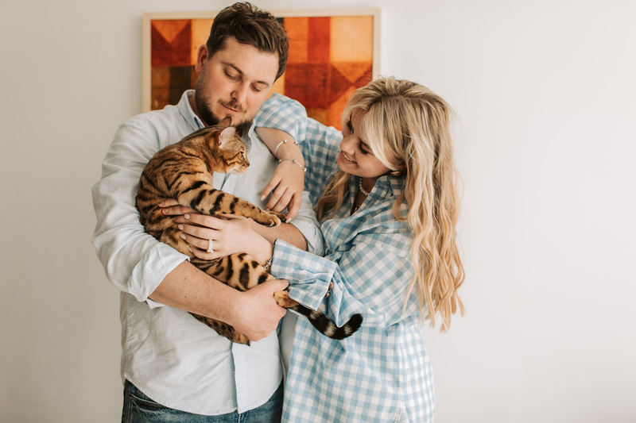
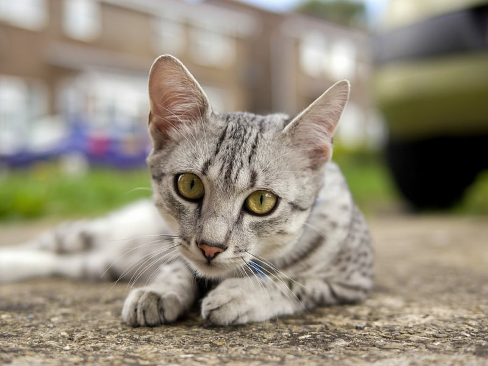
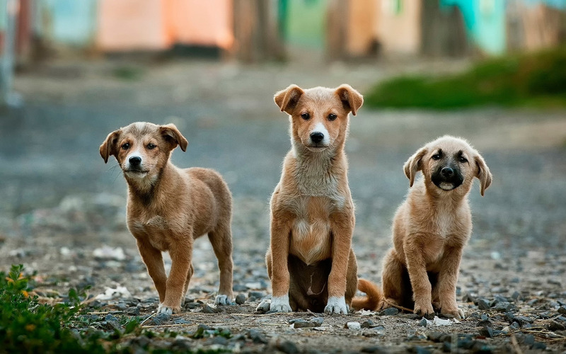
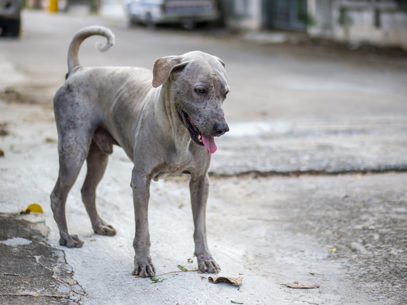

En Almas Catninas, creemos en las segundas oportunidades
|

NosotrosSomos una fundación comprometida con sanar tanto corazones humanos como peludos. |

AdoptaSomos una fundación comprometida con sanar tanto corazones humanos como peludos. |
TestimoniosSomos una fundación comprometida con sanar tanto corazones humanos como peludos. |
BlogSomos una fundación comprometida con sanar tanto corazones humanos como peludos. |
Razón #1:Somos una fundación comprometida con sanar tanto corazones humanos como peludos. |

Razón #2:Somos una fundación comprometida con sanar tanto corazones humanos como peludos. |

Razón #3:Somos una fundación comprometida con sanar tanto corazones humanos como peludos. |

Razón #4:Somos una fundación comprometida con sanar tanto corazones humanos como peludos. |